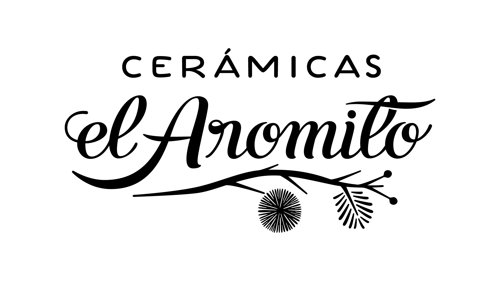

<!DOCTYPE html>
<html lang="en">
    <head>
        <meta charset="UTF-8">
        <meta name="viewport" content="width=device-width, initial-scale=1.0">
        <title>Ceramicas el Aromito</title>
        <link rel="stylesheet" href="styles.css">
        <link href="https://fonts.googleapis.com/css2?family=Great+Vibes&display=swap" rel="stylesheet">
        <link rel="preconnect" href="https://fonts.googleapis.com">
        <link rel="preconnect" href="https://fonts.gstatic.com" crossorigin>
        <link href="https://fonts.googleapis.com/css2?family=Raleway:ital,wght@0,100..900;1,100..900&display=swap" rel="stylesheet">
        <link rel="preconnect" href="https://fonts.googleapis.com">
        <link rel="preconnect" href="https://fonts.gstatic.com" crossorigin>
        <link href="https://fonts.googleapis.com/css2?family=Plus+Jakarta+Sans:ital,wght@0,200..800;1,200..800&family=Raleway:ital,wght@0,100..900;1,100..900&display=swap" rel="stylesheet">
        <link rel="preconnect" href="https://fonts.googleapis.com">
        <link rel="preconnect" href="https://fonts.gstatic.com" crossorigin>
        <link href="https://fonts.googleapis.com/css2?family=Plus+Jakarta+Sans:ital,wght@0,412;1,412&display=swap" rel="stylesheet">
        <link rel="preconnect" href="https://fonts.googleapis.com">
        <link rel="preconnect" href="https://fonts.gstatic.com" crossorigin>
        <link href="https://fonts.googleapis.com/css2?family=Eagle+Lake&display=swap" rel="stylesheet">
        <link rel="preconnect" href="https://fonts.googleapis.com">
        <link rel="preconnect" href="https://fonts.gstatic.com" crossorigin>
        <link href="https://fonts.googleapis.com/css2?family=Eagle+Lake&family=Lugrasimo&display=swap" rel="stylesheet">
         <!-- Favicon -->
        <link rel="icon" href="imges/mini-logo.png">
</head>


    </html>

    <body>
        <section class="hero">
        <header>
            <nav>
                <ul  class="navegacion">
                    <li><a href="index.html">INICIO</a></li>
                    <li><a href="contacto.html">CONTACTO</a></li>
                    <li><a href="colecciones.html">COLLECIONES</a></li>
                    <li><a href="eventos.html">EVENTOS</a></li>
                    <li><a href="Talleres.html">TALLERES</a></li>
                   
                </ul>
            </nav>

        </header>

                <main id="contenido">
                    <section class="box-titulo">
            
            
                    </section>
        </section>
<section>
            
            <article class="presentacion texto-destacado">  
                <h1 class="centrado arcilla"> El Aromito </h1>
                <p>En nuestro taller, la cerámica es más que un arte: es una forma de vida. Cada pieza cuenta una historia, cada textura evoca un recuerdo.</p>
                <p>Nos especializamos en cerámica gres, creando objetos que son tanto funcionales como bellos, ideales para el día a día.</p>
                <p>Somos <strong>Noe y Pablo</strong>, ceramistas y creadores de Cerámicas El Aromito.</p>
                <p>Trabajamos la cerámica como un oficio vivo, donde el barro, el fuego y el tiempo marcan el ritmo. </p>
                <p>Nuestro fuerte es la cerámica gres: piezas resistentes, funcionales y bellas, pensadas para acompañar la vida cotidiana.</p>
                <p>Nos inspira la idea de "la belleza del objeto cotidiano", como expresa Soetsu Yanagi: una taza que abriga, una lámpara que envuelve, un cuenco que invita.</p>
                <p>Además de nuestra línea utilitaria, creamos piezas artísticas inspiradas en técnicas ancestrales, y ofrecemos herramientas para ceramistas, porque creemos en compartir y fortalecer la red de quienes crean con sus manos.</p>

            </article>
             

        

        
        <article class="texto-destacado arcilla-texto">
               <h2 class="centrado arcilla"> ¿De dónde obtenemos la Arcilla?</h2>
            <p>La obtenemos de lugares cercanos a nuestro taller, ubicado a 300 metros del Río Tragadero en Colonia Benítez, Chaco</p>
        
                <h2 class="centrado arcilla"> Línea Cerámica Gres</h2>
            <p> El valor de la cerámica gres radica en su resistencia y en su nula absorción de humedad es 100% higiénica. Ideal para uso gastronómico..</p>

            <h2 class="centrado arcilla"> Esmaltes Artesanales</h2>
            <p> Producimos nuestras propias pastas y esmaltes artesanales para lograr piezas de calidad, con identidad regional..</p>

        </article>

        <article class="texto-destacado arcilla-texto ">
        <article class="hacemos-realidad">
             <p>Las piezas que vas a encontrar en la web son una muestra de los modelos que más habitualmente realizamos en nuestro taller, pero no son las únicas.</p>
             <p>Cada objeto nace desde cero, modelado en cerámica gres y esmaltado de forma artesanal. Eso nos permite crear piezas únicas, adaptadas a cada pedido.</p>
             <p>Podés elegir el color del esmalte, el tono de la pasta y también solicitar variaciones de forma o tamaño.</p>
             <p><strong>Si imaginás algo distinto, escribinos: lo hacemos realidad.</strong></p>
    </article>
        </article>
             


       
</section>


       

    </body>

</main>
    <footer class="centrado">

 <p>© 2025 Cerámicas El Aromito - Chaco, Argentina</p>
  <p>
    <a href="https://www.instagram.com/ceramicaselaromito/">Instagram</a> |
    <a href="mailto:contacto@ceramicasaromito.com">Contacto</a>
  </p>

    </footer>


</html>